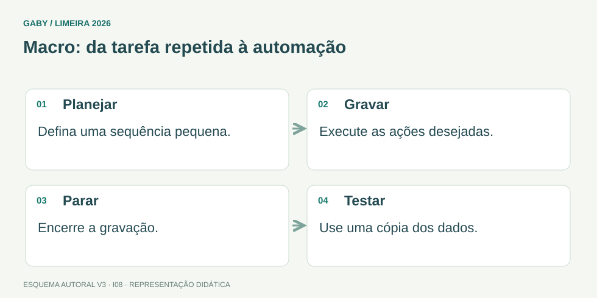

Objetivos do módulo
- Entender o que é macro e para que serve.
- Reconhecer riscos de segurança em macros.
- Distinguir macro de fórmula/função.
Macro: da tarefa repetida à automação

Descrição em texto do esquema
- Planejar: Defina uma sequência pequena.
- Gravar: Execute as ações desejadas.
- Parar: Encerre a gravação.
- Testar: Use uma cópia dos dados.
Oficina visual · aplique o esquema
Uma macro formata cabeçalhos toda semana. Por que é útil testá-la em uma cópia antes de usar a planilha principal?
Atividade autoral complementar da V3. Registre sua resposta; a resolução está no arquivo de gabarito e revisão.
Mapa do conteúdo
1. Conceito
Macro é uma sequência automatizada de comandos/ações. No Office, muitas macros usam VBA (Visual Basic for Applications). Podem ser gravadas ou programadas para repetir tarefas.
2. Macro x fórmula
Fórmula calcula valor em célula; macro pode manipular planilhas, formatar, importar dados, executar rotinas e interagir com objetos. São conceitos diferentes.
3. Segurança
Macros podem executar código e, portanto, representar risco. Não se deve habilitar macros de origem desconhecida. O Office possui configurações de segurança, locais confiáveis e assinaturas digitais.
4. Arquivos habilitados
Pastas .xlsx não armazenam macros VBA da forma padrão; .xlsm é formato comum habilitado para macro. Essa distinção aparece com frequência em questões.
Exemplos resolvidos passo a passo
Exemplo 1
Situação: Uma rotina formata relatório toda semana com os mesmos passos.
Exemplo 2
Situação: Recebe .xlsm de remetente desconhecido pedindo “habilite conteúdo”.
Pegadinhas e erros frequentes
- Achar que macro é só fórmula.
- Habilitar conteúdo desconhecido.
- Confundir .xlsx com .xlsm.
Resumo de prova
- Macro automatiza ações.
- VBA é linguagem associada ao Office.
- .xlsm suporta macros.
- Macros podem ser vetor de malware.
Exercícios do módulo
Resolva sem consultar o arquivo de gabarito. As questões são autorais e construídas para treinar os conceitos do edital.
- somente somar células
- compactar Windows
- enviar e-mail sempre
- automatizar tarefas
Fontes: Microsoft — Início rápido: criar uma macro · Microsoft — Auxílio e aprendizado do Excel.
- Value Base Array
- Visual Browser API
- Visual Basic for Applications
- Virtual Binary Access
Fontes: Microsoft — Início rápido: criar uma macro · Microsoft — Auxílio e aprendizado do Excel.
- .txt
- .xlsm
- .xlsx
- .jpg
Fontes: Microsoft — Início rápido: criar uma macro · Microsoft — Auxílio e aprendizado do Excel.
- ser tratada com cautela
- ser sempre habilitada
- ser executada como administrador
- ser enviada a todos
Fontes: Microsoft — Início rápido: criar uma macro · Microsoft — Auxílio e aprendizado do Excel.
- são sempre iguais
- não podem coexistir
- só funcionam offline
- são conceitos diferentes
Fontes: Microsoft — Início rápido: criar uma macro · Microsoft — Auxílio e aprendizado do Excel.
- cria vídeo
- faz backup do Windows
- registra ações para reprodução
- grava áudio
Fontes: Microsoft — Início rápido: criar uma macro · Microsoft — Auxílio e aprendizado do Excel.
- não interagir com células
- formatar e manipular planilhas
- apenas mudar papel
- somente imprimir
Fontes: Microsoft — Início rápido: criar uma macro · Microsoft — Auxílio e aprendizado do Excel.
- macro pode executar código
- células são perigosas fisicamente
- gráficos usam internet sempre
- Excel não salva arquivos
Fontes: Microsoft — Início rápido: criar uma macro · Microsoft — Auxílio e aprendizado do Excel.
- é executável
- é imagem
- é PDF
- não é formato VBA macro-enabled padrão
Fontes: Microsoft — Início rápido: criar uma macro · Microsoft — Auxílio e aprendizado do Excel.
- mudar fonte
- compactar arquivo
- verificar origem/integridade
- aumentar soma
Fontes: Microsoft — Início rápido: criar uma macro · Microsoft — Auxílio e aprendizado do Excel.
Quando terminar, abra Informática 08 - Excel - Macros - Gabarito e Revisão.
Checklist de domínio
- ☐ Entender o que é macro e para que serve.
- ☐ Reconhecer riscos de segurança em macros.
- ☐ Distinguir macro de fórmula/função.
Meta do módulo: 80% ou mais nas questões, sem depender de consulta.
Referências e conteúdos auxiliares
- Microsoft — Início rápido: criar uma macroGravação de macros e guia Desenvolvedor; confira versões compatíveis.
- Microsoft — Auxílio e aprendizado do ExcelCentral de ajuda para tabelas, filtros, classificação, gráficos e fórmulas.
Referências externas de apoio consultadas para a V3 em 27/09/2026. A origem das questões é o material autoral do projeto; estes links não indicam que uma instituição publicou ou validou os exercícios. As páginas externas precisam de internet. Em informática, confira a versão do programa; em legislação, observe o recorte e as regras de atualização do edital.